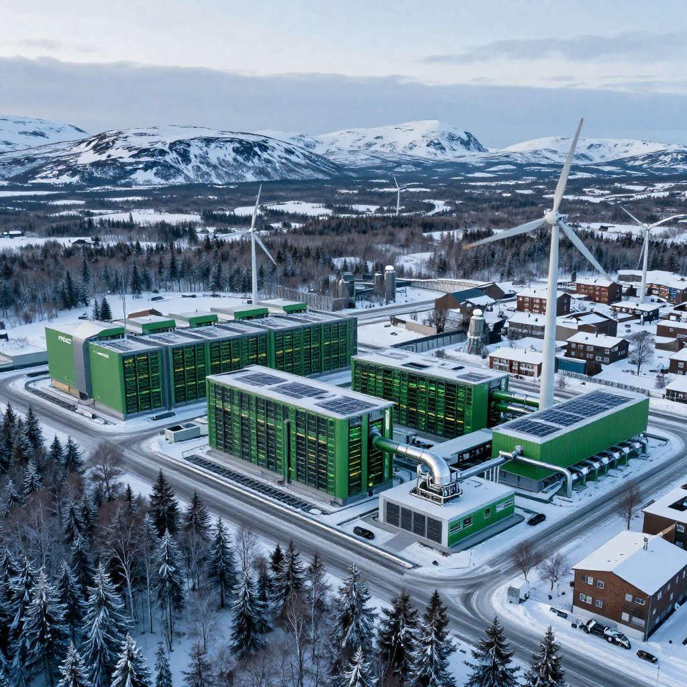

If you have been following the news lately, you have probably heard the same tired narrative about data centers. The headlines paint them as massive, energy-hungry monoliths that drain local power grids and consume millions of gallons of water. It is a story that has been repeated so often that it has become accepted as fact. But here is the truth: that narrative is dangerously outdated — and it is costing our communities a once-in-a-generation opportunity.
The Outdated Myth of the Resource-Draining Data Center
For years, the primary concern surrounding data centers has been their environmental footprint. Older facilities were designed in an era when energy efficiency was an afterthought. They relied on enormous amounts of electricity drawn directly from the local utility grid and millions of gallons of freshwater to cool their servers. In regions already facing water scarcity or strained power infrastructure, the arrival of a traditional data center was often met with understandable resistance from residents and local governments alike.
The problem is that the media has largely failed to update this narrative. The same talking points from a decade ago are still being recycled in headlines today, creating a public perception that is fundamentally disconnected from the reality of what modern data center technology is capable of. When communities make decisions based on outdated information, they risk rejecting projects that could genuinely transform their economic and environmental future.
The data center of 2026 bears almost no resemblance to the facilities that generated these concerns. The technology has evolved so dramatically that comparing the two is like comparing a horse-drawn carriage to an electric vehicle. Both get you from point A to point B — but the similarities end there.
Modern data centers use advanced environmental controls to dramatically reduce energy and water consumption.
How New Technology Makes Data Centers Truly Self-Sustainable
The modern data center is a marvel of engineering and sustainability. The industry has recognized the urgent need for change, and the solutions being deployed today are nothing short of revolutionary. We are no longer building the data centers of the past. We are building the digital infrastructure of the future — and that future is clean, efficient, and community-positive.
Revolutionizing Cooling and Water Efficiency
One of the most significant advancements is in cooling technology. Traditional data centers used vast amounts of potable water for evaporative cooling towers, a method that was both wasteful and environmentally damaging. Today, innovative facilities are utilizing closed-loop liquid cooling systems, direct-to-chip cooling, and even full immersion cooling — where servers are submerged in non-conductive liquid. These methods drastically reduce, and in many cases entirely eliminate, the need for continuous freshwater consumption.
The numbers tell a remarkable story. A modern data center designed with a closed-loop cooling system might use only around 5,000 gallons of potable water per day — primarily for employee restrooms and sinks, not for cooling. Compare that to a typical surrounding residential community, which can consume upwards of 500,000 gallons per day. That means a properly designed modern data center can operate using approximately 100 times less water than the neighborhoods around it.
Modern Data Center
Typical Residential Community
Powering the Grid, Not Draining It
The assumption that data centers simply drain the local power grid is no longer accurate. Forward-thinking developers are integrating renewable energy sources directly into their operations. By utilizing on-site solar arrays, wind generation, and advanced battery storage systems, these facilities can operate independently of the local grid. Some next-generation data centers are now designed to function as microgrids, capable of feeding surplus clean energy back into the community during periods of peak demand.
Furthermore, when new electric infrastructure is required to serve a modern data center, the costs are structured so that the project itself funds 100% of that new infrastructure. This protects existing residential and business customers from rate increases while the community gains upgraded, more resilient power infrastructure at no cost to ratepayers.
Turning Waste Heat Into Community Warmth
Perhaps one of the most exciting and underreported developments is the concept of waste heat reuse. Servers generate a tremendous amount of thermal energy, which historically was simply vented into the atmosphere as waste. Today, modern data centers are capturing this heat and redirecting it to local district heating networks. This recovered thermal energy is being used to warm nearby homes, businesses, greenhouses, and community facilities — providing a direct, tangible benefit to the surrounding neighborhood that most people have never heard about.
Closed-Loop & Immersion Cooling
Recirculating cooling systems eliminate the need for water-intensive cooling towers, reducing water use by up to 100x compared to legacy designs.
Self-Funded Energy Infrastructure
Modern projects fund 100% of any new electrical infrastructure required, protecting local ratepayers from cost increases while upgrading community power systems.
Waste Heat Recovery
Captured server heat is redistributed to warm homes, greenhouses, and public buildings in the surrounding area — turning waste into a community resource.
Microgrid & Renewable Integration
On-site solar, wind, and battery storage allow facilities to operate off-grid and feed clean energy back to the community during peak demand periods.
Old vs. New: A Clear Comparison
The contrast between legacy data centers and their modern counterparts is stark. Understanding this difference is the first step toward making informed decisions about how these facilities can serve our communities.
| Category | Legacy Data Centers | Modern Data Centers |
|---|---|---|
| Energy Source | Grid-dependent — drew heavily from local utility infrastructure | Self-powered — on-site solar, wind, and battery storage |
| Water Consumption | High impact — millions of gallons of freshwater for cooling | Minimal to zero — closed-loop systems recirculate the same water |
| Community Benefit | Limited — primarily construction jobs, then minimal local impact | Significant — jobs, tax revenue, heat reuse, grid stability |
| Grid Impact | Strain — increased load on local utility infrastructure | Contribution — can feed clean energy back to the grid |
| Infrastructure Cost | Shared burden — costs often passed to local ratepayers | Project-funded — 100% of new infrastructure paid by the developer |
| Land Use | Greenfield — often required new land development | Adaptive reuse — revitalizes former industrial or approved sites |
The Role of Industry Leaders Setting the New Standard

Forward-thinking data center campuses integrate renewable energy and sustainable design from the ground up.
To truly understand the potential of modern data centers, we must look at the companies that are setting the standard for sustainable, community-integrated development. Organizations like TECfusions — whose very name stands for Technology, Environment, and Community — serve as a prime example of what is possible when innovation meets responsibility.
TECfusions and similar forward-thinking groups are demonstrating that data centers can be built with a genuine commitment to the communities they inhabit. By prioritizing the adaptive reuse of existing industrial sites, deploying advanced cooling technologies, and committing to renewable energy integration, they are proving that the industry can grow sustainably and that growth can be a direct benefit to the people who live nearby. This is the model that communities across the country should be demanding from any data center developer who comes to their door.
The key insight here is not about any single company — it is about recognizing that the right expertise, the right technology, and the right community engagement make all the difference. Most people do not know what actually works. Most developers will not tell you. That is the gap that needs to be filled, and that is exactly what Project Tango is designed to address.
Project Tango: A Community-Driven Vision for the Future
Project Tango is not simply a development plan or a business proposal. It is a community-driven initiative built on the belief that when people are properly informed and collectively engaged, they can shape the future of the infrastructure being built in their own backyards.
You can see these principles taking shape in real-world applications right here in Florida. The proposed Central Park Commerce Center in western Palm Beach County — a site that has been approved and permitted for industrial and employment uses since 2016 — is one example of how modern data center development can be done right. Located along Southern Boulevard next to the FPL West County Energy Center, the site is designed with strict environmental protections, utilizing closed-loop cooling that recirculates the same water repeatedly, and ensuring that all new electrical infrastructure is funded entirely by the project itself — not by local ratepayers.
The Central Park Commerce Center (Project Tango) is a 202.7-acre site along Southern Boulevard in western Palm Beach County. It is designed to replace temporary heavy industrial uses — concrete plants, asphalt plants, and staging areas — with clean, high-tech data center infrastructure. The project is expected to expand the local tax base, create high-skill, high-wage jobs, support additional businesses and services, and generate long-term public revenue for the region.
This is the model that communities across the country should be studying. When a project is sited on already-approved industrial land, designed with community buffers, funded without burdening local ratepayers, and committed to minimal environmental impact, it becomes a genuine asset rather than a liability. The challenge is that very few people know how to identify and demand these standards — and that is precisely the knowledge gap that Project Tango exists to close.
Project Tango is about taking control of the narrative. It is about ensuring that these facilities are built under the right direction — with full community support, radical transparency, and an unwavering commitment to sustainability. When done correctly, a modern data center brings high-paying jobs, significant tax revenue, upgraded local infrastructure, and a cleaner, more resilient energy future. But this only happens when the community is informed, involved, and guided by people who truly understand how to make it work.
Most People Don't Know What Actually Works. Let's Change That.
Connect with me on Instagram. I will guide you and your community toward making the right decisions about modern data center development — because the future belongs to the communities that get this right.
Connect on Instagram: @melissajohnsonrealtorflorida DM me directly — let's build something great for your community.